| Name |
Image |
Tier |
Pool |
Description |
Flavor |
| RoboCore |
 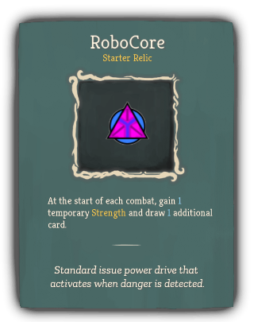 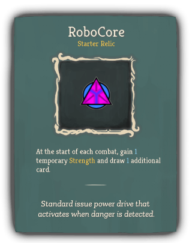 |
Starter |
Robot_orange_color |
At the start of each combat, gain 1 temporary Strength and draw 1 additional card. |
Standard issue power drive that activates when danger is detected. |
| Clockwork Sextant |
 |
Common |
Robot_orange_color |
At the start of your 2nd turn, gain 1 Artifact. |
"Was this ever used by sailors?" |
| Foglands Knife |
 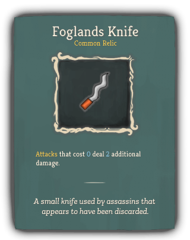 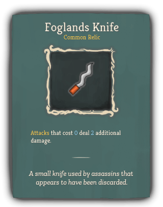 |
Common |
Robot_orange_color |
Attacks that cost 0 deal 2 additional damage. |
A small knife used by assassins that appears to have been discarded. |
| Bottled Gravity |
 |
Uncommon |
Robot_orange_color |
Choose a card. It costs 1 less [E] in combat. |
The essence of pure gravity somehow makes the bottle feel lighter. |
| Plasma Hourglass |
 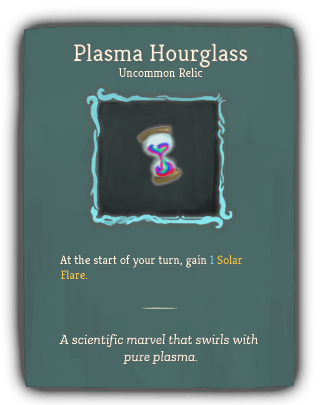 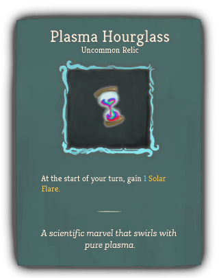 |
Uncommon |
Robot_orange_color |
At the start of your turn, gain 1 Solar Flare. |
A scientific marvel that swirls with pure plasma. |
| Ring of the Newt |
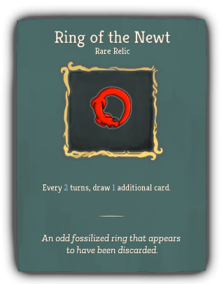 |
Rare |
Robot_orange_color |
Every 2 turns, draw 1 additional card. |
An odd fossilized ring that appears to have been discarded. |
| Tough Plating |
 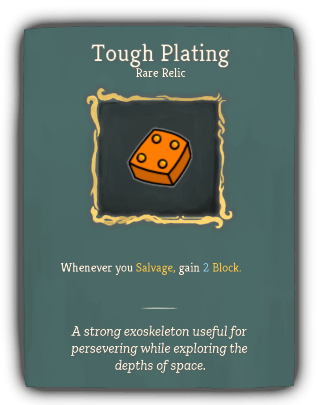 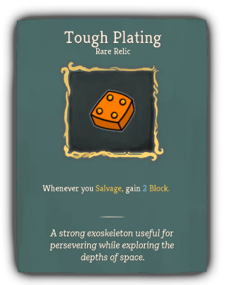 |
Rare |
Robot_orange_color |
Whenever you Salvage, gain 2 Block. |
A strong exoskeleton useful for persevering while exploring the depths of space. |
| Reprocessor |
 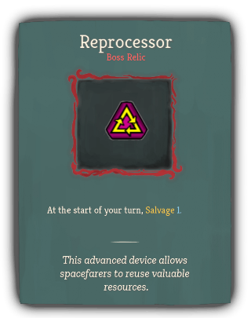 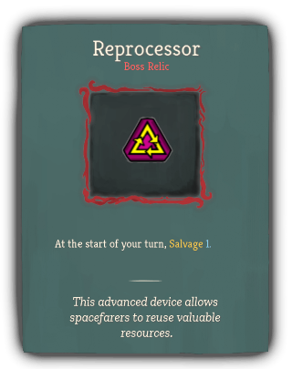 |
Boss |
Robot_orange_color |
At the start of your turn, Salvage 1. |
This advanced device allows spacefarers to reuse valuable resources. |
| Search Specs |
 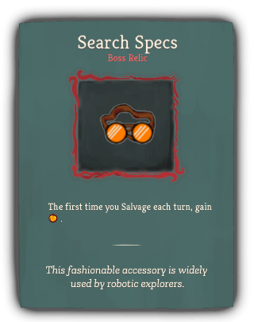 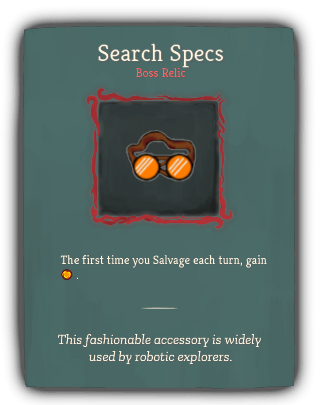 |
Boss |
Robot_orange_color |
The first time you Salvage each turn, gain [E] . |
This fashionable accessory is widely used by robotic explorers. |
| TurboCore |
 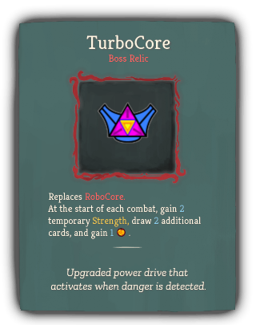 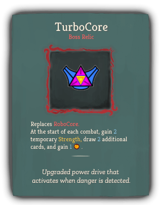 |
Boss |
Robot_orange_color |
Replaces RoboCore.
At the start of each combat, gain 2 temporary Strength, draw 2 additional cards, and gain 1 [E] . |
Upgraded power drive that activates when danger is detected. |
| Slide Rule |
 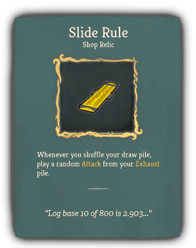 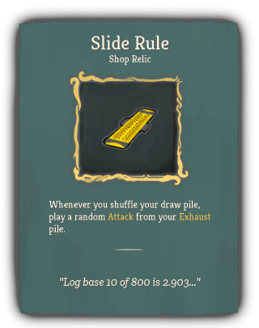 |
Shop |
Robot_orange_color |
Whenever you shuffle your draw pile, play a random Attack from your Exhaust pile. |
"Log base 10 of 800 is 2.903..." |
{kind=link}

{kind=link}

{kind=link}
{kind=link}
{kind=link}
{kind=link}
{kind=link}
{kind=link}
{kind=link}